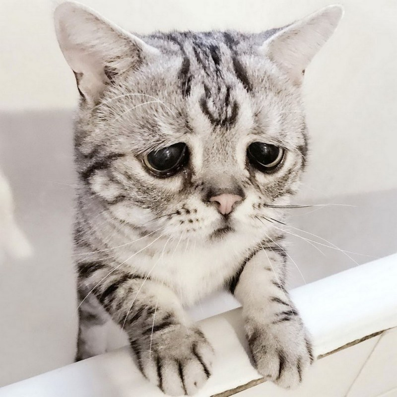
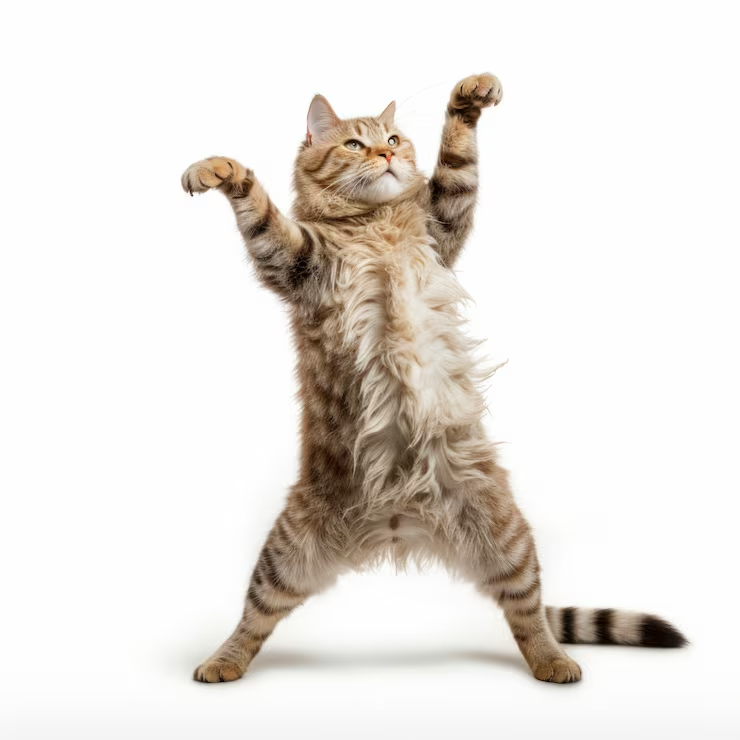
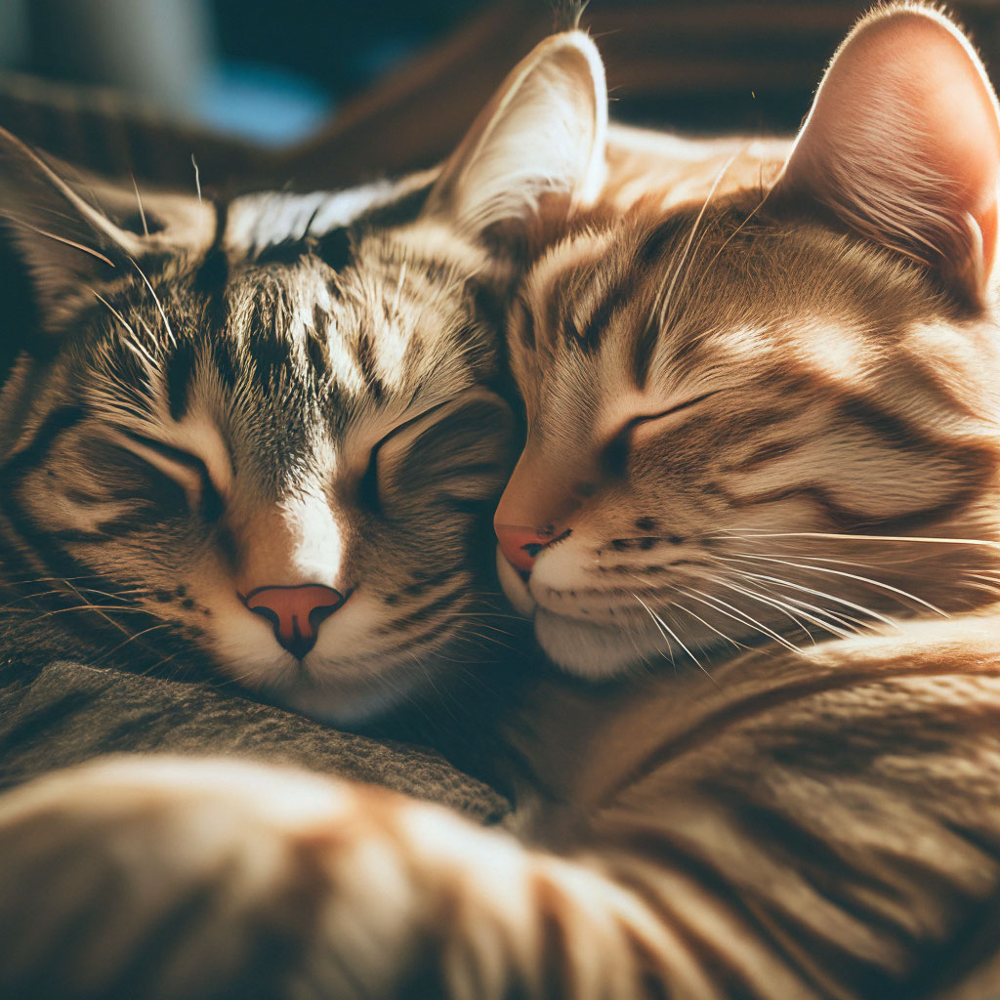
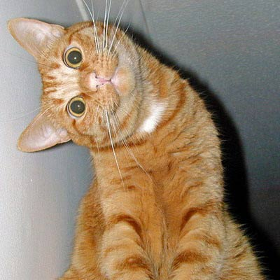
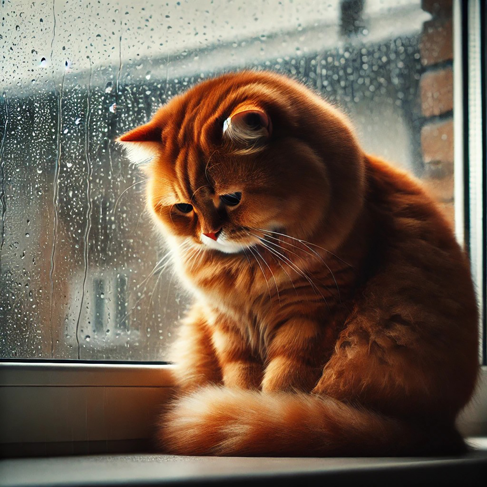
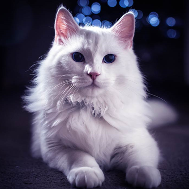

-
Фритрек и нулевой спринт: Подготовка к работе

Это было самое начало пути. На этом этапе важно было проникнуться основами и настроиться на учёбу. И, возможно, подумать, как новые знания могут повлиять на ваше будущее.
Раньше я смотрела на красивые сайты и думала: «Как это вообще сделали?», а теперь, когда начала разбираться в основах, у меня внутри будто лампочка зажглась. Появилась мечта — когда-нибудь сделать свой первый проект с нуля, чтобы он был не просто «для галочки», а реально классный и мой. И пока это просто мечта, но после первых спринтов я поняла, что идти к ней очень даже интересно!
-
1 спринт: Я — чистый лист
На первых этапах мы работали со страхами и сомнениями, которые часто испытывают новички. Один из них — страх перед чистым листом. Это, конечно же, намного сложнее, чем боязнь куска бумаги. Часто за этим ощущением скрываются более глубокие вопросы: с чего начать? а вдруг будет слишком сложно? что, если я не справлюсь?
Да, этот страх перед чистым листом я очень хорошо помню! Сижу, смотрю на пустой файл в редакторе, курсор моргает, а в голове — тишина. Руки будто забывают всё, что учила на теории. Но знаете, что мне помогло? Друзья сказали: «Просто начни писать, пусть даже криво, пусть даже потом переделаешь». И правда — стоит только написать первую строчку кода, как страх уходит. Появляется азарт, хочется доделать, донастроить, чтобы было красиво. Теперь я знаю: главное — просто начать, а дальше всё пойдёт)
-
1 спринт: А если не получится?

Первый проект — позади! Но это всё ещё самое начало пути. Радость могла быстро померкнуть и смениться ожиданием провала. Или вы, наоборот, могли вдохновиться успехами и поверить в себя.
У меня, честно говоря, были оба этих состояния — и по очереди, и иногда одновременно. Сначала была такая гордость: «Я сделала это! У меня получилось!», я даже другу скрин скинула, похвасталась. А буквально через пару часов меня накрыло: «А вдруг это просто повезло? А следующий проект будет в сто раз сложнее?» Но потом я подумала: раз получилось один раз — значит, получится и дальше. Просто нужно чуть больше времени, чуть больше практики. И знаете, это такое классное чувство — когда страх уже не парализует, а просто напоминает, что впереди есть куда расти.
-
2 спринт: Погоня за идеалом

На этом этапе вы уже достаточно разбирались в основах вёрстки, чтобы понять, как много ещё впереди. Вы могли попытаться погнаться за идеалом и понять, что он недостижим. А, может, вы вовсе и не подвержены перфекционизму и вместо того, чтобы сделать идеально, старались просто сделать.
Я как раз из тех, кто сначала хочет сделать идеально, а потом вообще ничего не делает, потому что страшно, что «неидеально получится». И на этом этапе меня накрыло по-полному: я смотрела на красивые макеты и думала: «Ну как у них так ровно всё стоит, а у меня тут на два пикселя съехало?» А потом поняла, что если я буду каждый раз переделывать идеально, то я просто никогда не уйду дальше первой страницы. В какой-то момент я сказала себе: «Ок, пусть будет не идеально, но оно работает, и я понимаю, как это сделано». И знаете, когда разрешила себе делать «просто» — процесс пошёл намного веселее, и даже пиксели как-то сами собой начали выравниваться.
-
2 спринт: О тех, кто рядом

Всё это время вы были не одиноки (хотя, возможно, иногда и чувствовали, что одни против целого мира). Вас окружали одногруппники, команда сопровождения и просто близкие люди, которым можно пожаловаться, если очередной макет просто так не поддавался. Осваивать что-то новое легче, когда рядом есть единомышленники, не правда ли?
Я очень это почувствовала, когда мы начали общаться в общем чате. Помню, сижу вечером, мучаюсь с позиционированием, всё плывёт, уже готова закрыть ноутбук и сказать «всё, это не моё». А потом захожу в чат, а там кто-то пишет: «Ребята, у меня футер уполз наверх, это конец?» — и все такие: «О, у меня тоже так было, просто добавь margin-top: auto»)) И сразу становится легче. Понимаешь, что ты не одна такая глупая, что это нормальный этап у всех. А ещё было очень приятно, когда сама смогла кому-то подсказать — такой маленький, но свой вклад в общее дело.
-
3 спринт: Обходные стратегии

На этом курсе вы постоянно решали разные задачи. В какой-то момент вам могло показаться, что решения просто иссякли. Значит, пришло время посмотреть на задачу под другим углом.
Была у меня такая задача — нужно было сверстать карточки, чтобы они красиво выстраивались в ряд и на мобилке не разваливались. Я перепробовала всё, что знала: флексы крутила так и эдак, марджины ставила. Сижу, смотрю в код, в глазах рябит, и кажется, что я уже всё возможное перепробовала, а оно всё равно не так. Решила сделать перерыв, пошла чай попила с печеньками. Возвращаюсь, смотрю на задачу свежим взглядом — и вдруг понимаю: а что если попробовать гриды? До этого они мне казались чем-то сложным, но тут я решилась. И о чудо! Всё встало как надо, да ещё и проще, чем я мучилась с флексами. Теперь я знаю: если решения закончились — значит, пора выдохнуть, отойти от экрана и вернуться с мыслью «а что я ещё не пробовала?».
-
3 спринт: Когда опускаются руки

Во время учёбы часто возникает чувство, когда не знаешь, за что хвататься. Вроде и проектную пора сдавать, и задачи хочется порешать, и в теории получше разобраться, и жизнь не забыть пожить. В такие моменты очень нужна концентрация. Вспомните, откуда вы её черпали.
Я в такие моменты превращалась в настоящего мастера планирования! Сначала, честно говоря, хваталась за всё сразу: открывала проект, потом читала теорию, потом отвлекалась на сообщения, и в итоге к вечеру понимала, что сделала что угодно, но только не то, что нужно. А потом я придумала себе маленький ритуал — утром я беру стикер и пишу на нём всего одну задачу на день. Не всё подряд, а одно главное дело: например, «доделать секцию с преимуществами» или «разобраться с адаптивом». И когда я вижу этот стикер, мне уже не надо думать «за что хвататься» — я просто делаю то, что написано. А ещё я открывала в браузере вкладку с плейлистом «lo-fi для учёбы», надевала наушники, и это как будто отгораживало меня от всего лишнего. И знаете, когда фокус только на одной задаче — она решается гораздо быстрее, и даже время на жизнь остаётся.
-
«Сейчас я здесь»

Сейчас вы уже очень много знаете о вёрстке. Но это только начало. Во-первых, впереди ещё много материала про «красотищу». Во-вторых, с окончанием курса учёба не заканчивается. Вёрстка — это целый мир. И этот мир постоянно меняется. Познать его полностью не получится, но это тот случай, когда важен сам процесс познания. Ведь часто путь — и есть результат.
Да, я это уже начала понимать. Когда мы только начинали, я думала: «Вот выучу HTML и CSS — и всё, я супер-верстальщица». А сейчас понимаю, что это как выучить буквы алфавита и сказать, что ты уже писатель. Впереди столько всего: и анимации, и фреймворки, и чтобы с бэкендом подружиться, и чтобы сайты не только красивые, но и удобные были. И знаете, меня это почему-то не пугает, а наоборот, радует. Потому что я поняла главное: в вёрстке никогда не бывает скучно. Всегда есть что-то новое, что можно попробовать, какой-то приём, который сделает твой проект чуточку круче. И пусть я никогда не узнаю всего — это и не нужно. Главное, что мне нравится этот путь: сегодня я чуть лучше, чем вчера, а завтра будет ещё интереснее.